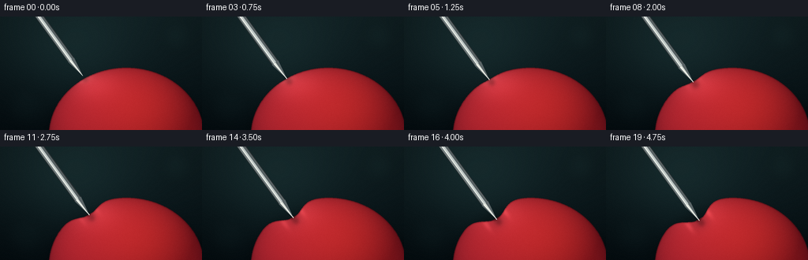
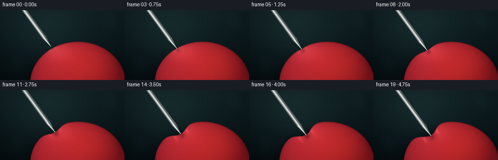
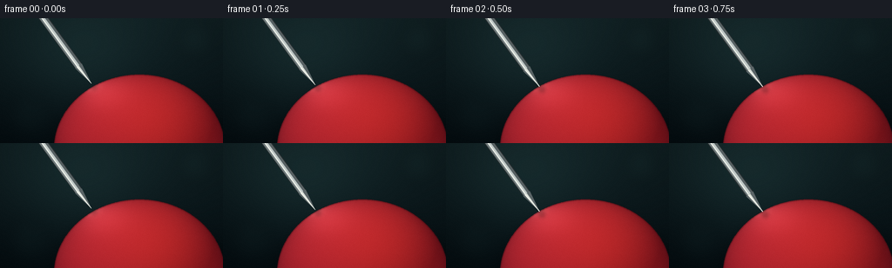

CODING AGENTS AS PIXEL WORLD MODELS
traex/GPT-5.6-Sol · mechanics_0030
点击播放 · 原生 RGB 像素
逐轮保存的候选
回放视频、检查图与代码变化。
每份候选均可单独播放。实际图片检查记录在下方工具轨迹中。
候选 01播放与检查图
点击播放 · 原生 RGB 像素

展开代码变化
--- 上一保存版本
+++ 本次保存版本
@@ -0,0 +1,205 @@
+from pathlib import Path
+import math
+import numpy as np
+import cv2
+from PIL import Image
+import artifact_io
+
+# Procedural 3x supersampled macro animation.
+W, H, N = 256, 144, 20
+S = 3
+WW, HH = W*S, H*S
+rng = np.random.default_rng(30)
+
+# Geometry in final-pixel coordinates.
+C = np.array([160.0, 151.0])
+RX, RY = 98.0, 86.0
+THETA0 = -2.14
+P0 = C + np.array([RX*math.cos(THETA0), RY*math.sin(THETA0)])
+U = (C-P0) / np.linalg.norm(C-P0) # needle points into balloon
+TAN = np.array([-U[1], U[0]])
+
+# Fine, static sensor/rubber texture to avoid temporal shimmer.
+noise_small = rng.normal(0, 1, (HH, WW)).astype(np.float32)
+noise_small = cv2.GaussianBlur(noise_small, (0,0), 0.55)
+Y, X = np.mgrid[0:HH, 0:WW].astype(np.float32)
+x = X/S; y = Y/S
+
+
+def smoothstep(v):
+ v = np.clip(v, 0., 1.)
+ return v*v*(3-2*v)
+
+
+def alpha_comp(base, layer, alpha):
+ if alpha.ndim == 2:
+ alpha = alpha[...,None]
+ return base*(1-alpha) + layer*alpha
+
+
+def poly_mask(points):
+ m = np.zeros((HH,WW), np.uint8)
+ cv2.fillPoly(m, [np.round(points*S).astype(np.int32)], 255, lineType=cv2.LINE_AA)
+ return m.astype(np.float32)/255
+
+
+def line_layer(img, a, b, color, width):
+ cv2.line(img, tuple(np.round(a*S).astype(int)), tuple(np.round(b*S).astype(int)),
+ color, max(1,round(width*S)), cv2.LINE_AA)
+
+
+def ellipse_poly(depth, sigma):
+ th = np.linspace(-math.pi, math.pi, 900, endpoint=False)
+ pts = np.column_stack((C[0]+RX*np.cos(th), C[1]+RY*np.sin(th)))
+ da = np.arctan2(np.sin(th-THETA0), np.cos(th-THETA0))
+ # A tight, elastic dimple: broad shoulders and a locally sharper bottom.
+ q = np.abs(da)/sigma
+ w = np.exp(-0.5*q*q)
+ w *= (1.0 - 0.07*np.exp(-0.5*(q/0.22)**2))
+ w[np.argmin(np.abs(da))] = 1.0
+ pts += U[None,:] * (depth*w[:,None])
+ return pts, th
+
+
+def render_frame(fi):
+ tt = fi/(N-1)
+ # First 12% is a small approach; then pressure steadily increases.
+ press = smoothstep((tt-0.10)/0.90)
+ depth = 18.5*press
+ sigma = 0.085 + 0.080*math.sqrt(max(press,0))
+ gap = 4.2*(1-smoothstep(tt/0.12))
+ tip = P0 + U*depth - U*gap
+
+ # Soft studio background, teal-black with a vignette and faint bokeh.
+ top = np.array([18, 35, 38], np.float32)
+ bot = np.array([5, 14, 18], np.float32)
+ grad = np.clip(y/H,0,1)[...,None]
+ img = top*(1-grad) + bot*grad
+ glow = np.exp(-(((x-91)/94)**2 + ((y-42)/74)**2)*1.4)[...,None]
+ img += glow*np.array([8,13,12],np.float32)
+ vign = np.clip(((x-W/2)/(W*.72))**2 + ((y-H/2)/(H*.88))**2,0,1)[...,None]
+ img *= (1-.26*vign)
+ # Defocused background glints.
+ bg = np.zeros((HH,WW,3),np.float32)
+ ba = np.zeros((HH,WW),np.float32)
+ for bx,by,br,c,a in [(224,25,20,(35,63,60),.13),(33,113,24,(29,53,54),.10),
+ (190,64,9,(58,76,69),.07)]:
+ cv2.circle(bg,(int(bx*S),int(by*S)),int(br*S),c,-1,cv2.LINE_AA)
+ cv2.circle(ba,(int(bx*S),int(by*S)),int(br*S),a,-1,cv2.LINE_AA)
+ ba=cv2.GaussianBlur(ba,(0,0),9*S); bg=cv2.GaussianBlur(bg,(0,0),9*S)
+ img=alpha_comp(img,bg,ba)
+
+ pts, th = ellipse_poly(depth, sigma)
+ mask = poly_mask(pts)
+
+ # Ground/volume shadow behind the lower-left balloon.
+ sh = np.zeros((HH,WW),np.float32)
+ cv2.ellipse(sh,(int(C[0]*S),int((C[1]+8)*S)),(int(RX*1.05*S),int(RY*.98*S)),0,0,360,1,-1)
+ sh=cv2.GaussianBlur(sh,(0,0),7*S)
+ img *= (1-.28*sh[...,None]*(1-mask[...,None]))
+
+ # Rounded, translucent red rubber. A sphere-like normal field supplies volume.
+ nx=(x-C[0])/RX; ny=(y-C[1])/RY
+ rr=nx*nx+ny*ny
+ nz=np.sqrt(np.maximum(0,1-rr))
+ # Main softbox comes from upper left, plus mild frontal fill.
+ L=np.array([-0.48,-0.70,0.52]); L=L/np.linalg.norm(L)
+ diffuse=np.clip(nx*L[0]+ny*L[1]+nz*L[2],0,1)
+ rim=np.power(np.clip(1-nz,0,1),1.5)
+ base=np.zeros((HH,WW,3),np.float32)
+ base[...,0]=112 + 75*diffuse - 37*rim
+ base[...,1]=17 + 24*diffuse - 7*rim
+ base[...,2]=27 + 24*diffuse - 5*rim
+ # Warm subsurface glow toward the lower/right volume.
+ trans=np.exp(-(((x-190)/72)**2+((y-124)/71)**2))
+ base[...,0]+=28*trans; base[...,1]+=8*trans
+ # Broad reflected strip and small glossy hot spot.
+ broad=np.exp(-(((x-113)/37)**2+((y-82)/24)**2)*1.25)
+ hot=np.exp(-(((x-102)/16)**2+((y-76)/10)**2)*2.0)
+ base += broad[...,None]*np.array([31,18,19]) + hot[...,None]*np.array([50,45,42])
+ # Stationary micro texture, strongest in midtones.
+ base += noise_small[...,None]*np.array([2.0,1.15,1.2])
+
+ # Compression shadow follows the indentation and strengthens continuously.
+ deepest=P0+U*depth
+ qx=x-deepest[0]; qy=y-deepest[1]
+ du=qx*U[0]+qy*U[1]; dt=qx*TAN[0]+qy*TAN[1]
+ cavity=np.exp(-((du/13.0)**2+(dt/(6.0+8.0*press))**2)*1.35)*press
+ base[...,0]-=38*cavity; base[...,1]-=9*cavity; base[...,2]-=7*cavity
+ # Two restrained tension highlights on the shoulders of the dimple.
+ shoulders=(np.exp(-((du+1.5)/9)**2-((dt-(7+8*press))/3.1)**2)+
+ np.exp(-((du+1.5)/9)**2-((dt+(7+8*press))/3.1)**2))*press
+ base += shoulders[...,None]*np.array([31,18,18])
+ img=alpha_comp(img,base,np.clip(mask,0,1))
+
+ # Subtle outer silhouette: dark edge plus red inner glint, emphasizing deformation.
+ edge=np.zeros((HH,WW),np.uint8)
+ cv2.polylines(edge,[np.round(pts*S).astype(np.int32)],True,255,max(1,round(.9*S)),cv2.LINE_AA)
+ ea=cv2.GaussianBlur(edge.astype(np.float32)/255,(0,0),.32*S)*.30
+ img=alpha_comp(img,np.full_like(img,[58,9,16]),ea)
+
+ # The suspended needle casts a soft, lengthening contact shadow on the rubber.
+ shadow=np.zeros((HH,WW),np.float32)
+ a=tip-U*104 + np.array([3.2,3.8]); b=tip+np.array([3.2,3.8])
+ cv2.line(shadow,tuple(np.round(a*S).astype(int)),tuple(np.round(b*S).astype(int)),1.0,
+ round(7.5*S),cv2.LINE_AA)
+ shadow=cv2.GaussianBlur(shadow,(0,0),2.1*S)*mask*.24
+ img *= (1-shadow[...,None])
+
+ # Metallic sharp object: cylindrical shaft, tapered bevel, bright longitudinal reflection.
+ n=TAN
+ taper=tip-U*25
+ start=tip-U*125
+ # dark outline/body polygons
+ body=np.array([start+n*4.7,start-n*4.7,taper-n*4.7,taper+n*4.7])
+ outline=poly_mask(body)
+ img=alpha_comp(img,np.full_like(img,[42,49,51]),outline)
+ inner=np.array([start+n*3.8,start-n*3.8,taper-n*3.8,taper+n*3.8])
+ im=poly_mask(inner)
+ img=alpha_comp(img,np.full_like(img,[157,166,165]),im)
+ # longitudinal steel bands
+ for lo,hi,col in [(-3.7,-1.2,(87,97,99)),(-1.2,1.0,(191,200,198)),
+ (1.0,2.3,(235,239,232)),(2.3,3.7,(112,123,124))]:
+ band=np.array([start+n*lo,start+n*hi,taper+n*hi,taper+n*lo])
+ bm=poly_mask(band)
+ img=alpha_comp(img,np.full_like(img,col),bm)
+ # tapered sharpened point, with its own faceted shine
+ tri=np.array([taper+n*4.7,taper-n*4.7,tip])
+ tm=poly_mask(tri)
+ img=alpha_comp(img,np.full_like(img,[91,101,103]),tm)
+ tri2=np.array([taper+n*2.5,taper-n*.5,tip])
+ tm2=poly_mask(tri2)
+ img=alpha_comp(img,np.full_like(img,[218,224,217]),tm2)
+ tri3=np.array([taper+n*2.5,taper+n*1.3,tip])
+ tm3=poly_mask(tri3)
+ img=alpha_comp(img,np.full_like(img,[246,248,239]),tm3*.75)
+
+ # Pinpoint contact occlusion: a dark crescent where steel meets taut rubber.
+ if press>0:
+ ca=np.zeros((HH,WW),np.float32)
+ cc=deepest-U*.3
+ cv2.ellipse(ca,tuple(np.round(cc*S).astype(int)),
+ (max(1,round((2.0+2.0*press)*S)),max(1,round(1.15*S))),
+ math.degrees(math.atan2(U[1],U[0]))+90,0,360,1,-1,cv2.LINE_AA)
+ ca=cv2.GaussianBlur(ca,(0,0),.45*S)*(.16+.18*press)
+ img=alpha_comp(img,np.full_like(img,[50,10,15]),ca)
+ # redraw only the final sharp 2 pixels to keep the point legible
+ line_layer(img,tip-U*2.2,tip,(225,229,221),.52)
+
+ # Final optics: slight grain and supersampled downscale.
+ img=np.clip(img,0,255).astype(np.uint8)
+ out=np.array(Image.fromarray(img).resize((W,H),Image.Resampling.LANCZOS))
+ # extremely subtle deterministic camera grain
+ gr=np.random.default_rng(1000+fi).normal(0,.35,out.shape[:2])[...,None]
+ out=np.clip(out.astype(np.float32)+gr,0,255).astype(np.uint8)
+ return out
+
+
+def main():
+ frames=np.stack([render_frame(i) for i in range(N)],axis=0)
+ artifact_io.save(frames,Path(__file__).resolve().parent)
+ print('saved',frames.shape,frames.dtype)
+ print('contact',P0.round(2).tolist(),'motion_depth',18.5)
+
+if __name__=='__main__':
+ main()
候选 02播放与检查图
点击播放 · 原生 RGB 像素


展开代码变化
--- 上一保存版本
+++ 本次保存版本
@@ -22,6 +22,7 @@
# Fine, static sensor/rubber texture to avoid temporal shimmer.
noise_small = rng.normal(0, 1, (HH, WW)).astype(np.float32)
noise_small = cv2.GaussianBlur(noise_small, (0,0), 0.55)
+grain_out = rng.normal(0, .25, (H, W)).astype(np.float32)
Y, X = np.mgrid[0:HH, 0:WW].astype(np.float32)
x = X/S; y = Y/S
@@ -189,9 +190,8 @@
# Final optics: slight grain and supersampled downscale.
img=np.clip(img,0,255).astype(np.uint8)
out=np.array(Image.fromarray(img).resize((W,H),Image.Resampling.LANCZOS))
- # extremely subtle deterministic camera grain
- gr=np.random.default_rng(1000+fi).normal(0,.35,out.shape[:2])[...,None]
- out=np.clip(out.astype(np.float32)+gr,0,255).astype(np.uint8)
+ # Stable, very fine sensor texture (static to avoid temporal shimmer).
+ out=np.clip(out.astype(np.float32)+grain_out[...,None],0,255).astype(np.uint8)
return out
可观测工具轨迹
实际执行的命令与返回图片。
命令 1exit 0
/bin/bash -lc "cat prompt.txt && printf '\\n---RULES---\\n' && cat GENERATION_RULES.md && printf '\\n---SPEC---\\n' && cat task_spec.json"
命令 2exit 1
/bin/bash -lc "find . -maxdepth 2 -type f -printf '%p\\n' | sort && printf '\\nTOOLS\\n' && command -v ffmpeg && command -v python3 && python3 - <<'PY'
try:
import PIL; print('PIL', PIL.__version__)
except Exception as e: print('no PIL',e)
try:
import cv2; print('cv2',cv2.__version__)
except Exception as e: print('no cv2',e)
PY"命令 3exit 0
/bin/bash -lc 'cat artifact_io.py'
命令 4exit 0
/bin/bash -lc "command -v ffmpeg || true; command -v python3 || true; python3 - <<'PY' for m in ['PIL','cv2','numpy','imageio']: try: q=__import__(m); print(m,getattr(q,'__version__','ok')) except Exception as e: print(m,'NO',e) PY"
命令 5exit 0
/bin/bash -lc "cat > generate.py <<'PY'
from pathlib import Path
import math
import numpy as np
import cv2
from PIL import Image
import artifact_io
# Procedural 3x supersampled macro animation.
W, H, N = 256, 144, 20
S = 3
WW, HH = W*S, H*S
rng = np.random.default_rng(30)
# Geometry in final-pixel coordinates.
C = np.array([160.0, 151.0])
RX, RY = 98.0, 86.0
THETA0 = -2.14
P0 = C + np.array([RX*math.cos(THETA0), RY*math.sin(THETA0)])
U = (C-P0) / np.linalg.norm(C-P0) # needle points into balloon
TAN = np.array([-U[1], U[0]])
# Fine, static sensor/rubber texture to avoid temporal shimmer.
noise_small = rng.normal(0, 1, (HH, WW)).astype(np.float32)
noise_small = cv2.GaussianBlur(noise_small, (0,0), 0.55)
Y, X = np.mgrid[0:HH, 0:WW].astype(np.float32)
x = X/S; y = Y/S
def smoothstep(v):
v = np.clip(v, 0., 1.)
return v*v*(3-2*v)
def alpha_comp(base, layer, alpha):
if alpha.ndim == 2:
alpha = alpha[...,None]
return base*(1-alpha) + layer*alpha
def poly_mask(points):
m = np.zeros((HH,WW), np.uint8)
cv2.fillPoly(m, [np.round(points*S).astype(np.int32)], 255, lineType=cv2.LINE_AA)
return m.astype(np.float32)/255
def line_layer(img, a, b, color, width):
cv2.line(img, tuple(np.round(a*S).astype(int)), tuple(np.round(b*S).astype(int)),
color, max(1,round(width*S)), cv2.LINE_AA)
def ellipse_poly(depth, sigma):
th = np.linspace(-math.pi, math.pi, 900, endpoint=False)
pts = np.column_stack((C[0]+RX*np.cos(th), C[1]+RY*np.sin(th)))
da = np.arctan2(np.sin(th-THETA0), np.cos(th-THETA0))
# A tight, elastic dimple: broad shoulders and a locally sharper bottom.
q = np.abs(da)/sigma
w = np.exp(-0.5*q*q)
w *= (1.0 - 0.07*np.exp(-0.5*(q/0.22)**2))
w[np.argmin(np.abs(da))] = 1.0
pts += U[None,:] * (depth*w[:,None])
return pts, th
def render_frame(fi):
tt = fi/(N-1)
# First 12% is a small approach; then pressure steadily increases.
press = smoothstep((tt-0.10)/0.90)
depth = 18.5*press
sigma = 0.085 + 0.080*math.sqrt(max(press,0))
gap = 4.2*(1-smoothstep(tt/0.12))
tip = P0 + U*depth - U*gap
# Soft studio background, teal-black with a vignette and faint bokeh.
top = np.array([18, 35, 38], np.float32)
bot = np.array([5, 14, 18], np.float32)
grad = np.clip(y/H,0,1)[...,None]
img = top*(1-grad) + bot*grad
glow = np.exp(-(((x-91)/94)**2 + ((y-42)/74)**2)*1.4)[...,None]
img += glow*np.array([8,13,12],np.float32)
vign = np.clip(((x-W/2)/(W*.72))**2 + ((y-H/2)/(H*.88))**2,0,1)[...,None]
img *= (1-.26*vign)
# Defocused background glints.
bg = np.zeros((HH,WW,3),np.float32)
ba = np.zeros((HH,WW),np.float32)
for bx,by,br,c,a in [(224,25,20,(35,63,60),.13),(33,113,24,(29,53,54),.10),
(190,64,9,(58,76,69),.07)]:
cv2.circle(bg,(int(bx*S),int(by*S)),int(br*S),c,-1,cv2.LINE_AA)
cv2.circle(ba,(int(bx*S),int(by*S)),int(br*S),a,-1,cv2.LINE_AA)
ba=cv2.GaussianBlur(ba,(0,0),9*S); bg=cv2.GaussianBlur(bg,(0,0),9*S)
img=alpha_comp(img,bg,ba)
pts, th = ellipse_poly(depth, sigma)
mask = poly_mask(pts)
# Ground/volume shadow behind the lower-left balloon.
sh = np.zeros((HH,WW),np.float32)
cv2.ellipse(sh,(int(C[0]*S),int((C[1]+8)*S)),(int(RX*1.05*S),int(RY*.98*S)),0,0,360,1,-1)
sh=cv2.GaussianBlur(sh,(0,0),7*S)
img *= (1-.28*sh[...,None]*(1-mask[...,None]))
# Rounded, translucent red rubber. A sphere-like normal field supplies volume.
nx=(x-C[0])/RX; ny=(y-C[1])/RY
rr=nx*nx+ny*ny
nz=np.sqrt(np.maximum(0,1-rr))
# Main softbox comes from upper left, plus mild frontal fill.
L=np.array([-0.48,-0.70,0.52]); L=L/np.linalg.norm(L)
diffuse=np.clip(nx*L[0]+ny*L[1]+nz*L[2],0,1)
rim=np.power(np.clip(1-nz,0,1),1.5)
base=np.zeros((HH,WW,3),np.float32)
base[...,0]=112 + 75*diffuse - 37*rim
base[...,1]=17 + 24*diffuse - 7*rim
base[...,2]=27 + 24*diffuse - 5*rim
# Warm subsurface glow toward the lower/right volume.
trans=np.exp(-(((x-190)/72)**2+((y-124)/71)**2))
base[...,0]+=28*trans; base[...,1]+=8*trans
# Broad reflected strip and small glossy hot spot.
broad=np.exp(-(((x-113)/37)**2+((y-82)/24)**2)*1.25)
hot=np.exp(-(((x-102)/16)**2+((y-76)/10)**2)*2.0)
base += broad[...,None]*np.array([31,18,19]) + hot[...,None]*np.array([50,45,42])
# Stationary micro texture, strongest in midtones.
base += noise_small[...,None]*np.array([2.0,1.15,1.2])
# Compression shadow follows the indentation and strengthens continuously.
deepest=P0+U*depth
qx=x-deepest[0]; qy=y-deepest[1]
du=qx*U[0]+qy*U[1]; dt=qx*TAN[0]+qy*TAN[1]
cavity=np.exp(-((du/13.0)**2+(dt/(6.0+8.0*press))**2)*1.35)*press
base[...,0]-=38*cavity; base[...,1]-=9*cavity; base[...,2]-=7*cavity
# Two restrained tension highlights on the shoulders of the dimple.
shoulders=(np.exp(-((du+1.5)/9)**2-((dt-(7+8*press))/3.1)**2)+
np.exp(-((du+1.5)/9)**2-((dt+(7+8*press))/3.1)**2))*press
base += shoulders[...,None]*np.array([31,18,18])
img=alpha_comp(img,base,np.clip(mask,0,1))
# Subtle outer silhouette: dark edge plus red inner glint, emphasizing deformation.
edge=np.zeros((HH,WW),np.uint8)
cv2.polylines(edge,[np.round(pts*S).astype(np.int32)],True,255,max(1,round(.9*S)),cv2.LINE_AA)
ea=cv2.GaussianBlur(edge.astype(np.float32)/255,(0,0),.32*S)*.30
img=alpha_comp(img,np.full_like(img,[58,9,16]),ea)
# The suspended needle casts a soft, lengthening contact shadow on the rubber.
shadow=np.zeros((HH,WW),np.float32)
a=tip-U*104 + np.array([3.2,3.8]); b=tip+np.array([3.2,3.8])
cv2.line(shadow,tuple(np.round(a*S).astype(int)),tuple(np.round(b*S).astype(int)),1.0,
round(7.5*S),cv2.LINE_AA)
shadow=cv2.GaussianBlur(shadow,(0,0),2.1*S)*mask*.24
img *= (1-shadow[...,None])
# Metallic sharp object: cylindrical shaft, tapered bevel, bright longitudinal reflection.
n=TAN
taper=tip-U*25
start=tip-U*125
# dark outline/body polygons
body=np.array([start+n*4.7,start-n*4.7,taper-n*4.7,taper+n*4.7])
outline=poly_mask(body)
img=alpha_comp(img,np.full_like(img,[42,49,51]),outline)
inner=np.array([start+n*3.8,start-n*3.8,taper-n*3.8,taper+n*3.8])
im=poly_mask(inner)
img=alpha_comp(img,np.full_like(img,[157,166,165]),im)
# longitudinal steel bands
for lo,hi,col in [(-3.7,-1.2,(87,97,99)),(-1.2,1.0,(191,200,198)),
(1.0,2.3,(235,239,232)),(2.3,3.7,(112,123,124))]:
band=np.array([start+n*lo,start+n*hi,taper+n*hi,taper+n*lo])
bm=poly_mask(band)
img=alpha_comp(img,np.full_like(img,col),bm)
# tapered sharpened point, with its own faceted shine
tri=np.array([taper+n*4.7,taper-n*4.7,tip])
tm=poly_mask(tri)
img=alpha_comp(img,np.full_like(img,[91,101,103]),tm)
tri2=np.array([taper+n*2.5,taper-n*.5,tip])
tm2=poly_mask(tri2)
img=alpha_comp(img,np.full_like(img,[218,224,217]),tm2)
tri3=np.array([taper+n*2.5,taper+n*1.3,tip])
tm3=poly_mask(tri3)
img=alpha_comp(img,np.full_like(img,[246,248,239]),tm3*.75)
# Pinpoint contact occlusion: a dark crescent where steel meets taut rubber.
if press>0:
ca=np.zeros((HH,WW),np.float32)
cc=deepest-U*.3
cv2.ellipse(ca,tuple(np.round(cc*S).astype(int)),
(max(1,round((2.0+2.0*press)*S)),max(1,round(1.15*S))),
math.degrees(math.atan2(U[1],U[0]))+90,0,360,1,-1,cv2.LINE_AA)
ca=cv2.GaussianBlur(ca,(0,0),.45*S)*(.16+.18*press)
img=alpha_comp(img,np.full_like(img,[50,10,15]),ca)
# redraw only the final sharp 2 pixels to keep the point legible
line_layer(img,tip-U*2.2,tip,(225,229,221),.52)
# Final optics: slight grain and supersampled downscale.
img=np.clip(img,0,255).astype(np.uint8)
out=np.array(Image.fromarray(img).resize((W,H),Image.Resampling.LANCZOS))
# extremely subtle deterministic camera grain
gr=np.random.default_rng(1000+fi).normal(0,.35,out.shape[:2])[...,None]
out=np.clip(out.astype(np.float32)+gr,0,255).astype(np.uint8)
return out
def main():
frames=np.stack([render_frame(i) for i in range(N)],axis=0)
artifact_io.save(frames,Path(__file__).resolve().parent)
print('saved',frames.shape,frames.dtype)
print('contact',P0.round(2).tolist(),'motion_depth',18.5)
if __name__=='__main__':
main()
PY
python3 generate.py
ls -lh pixels.npz inspection.png transition_check.png index.html frames/00.png frames/19.png"命令 6exit 0
/bin/bash -lc "python3 - <<'PY'
from pathlib import Path
import numpy as np
from PIL import Image
f=np.stack([np.array(Image.open(p).convert('RGB')) for p in sorted(Path('frames').glob('*.png'))])
print('frames',f.shape,f.dtype,'range',f.min(),f.max())
print('mean RGB',np.round(f.mean((0,1,2)),2))
mad=np.mean(np.abs(np.diff(f.astype(np.int16),axis=0)),axis=(1,2,3))
print('adjacent MAD',np.round(mad,3))
# Motion/change localized but continuous, not duplicate frames.
print('duplicates',[(i,bool(np.array_equal(f[i],f[i+1]))) for i in range(19)])
z=np.load('pixels.npz')['pixels']
print('packed artifact',z.shape,z.dtype,'expected',(144,256,20))
for p in ['index.html','inspection.png','transition_check.png','pixels.npz','generate.py']:
print(p,Path(p).stat().st_size)
PY"命令 7exit 0
/bin/bash -lc "python3 generate.py && python3 - <<'PY'
from pathlib import Path
import json, numpy as np
from PIL import Image
spec=json.loads(Path('task_spec.json').read_text())
paths=sorted(Path('frames').glob('*.png'))
f=np.stack([np.array(Image.open(p).convert('RGB')) for p in paths])
assert f.shape==(spec['frames'],spec['height'],spec['width'],3)
assert f.dtype==np.uint8 and len(paths)==20
z=np.load('pixels.npz')['pixels']; assert z.shape==(144,256,20)
assert all(Path(p).exists() and Path(p).stat().st_size>0 for p in ['pixels.npz','index.html','inspection.png','transition_check.png'])
mad=np.mean(np.abs(np.diff(f.astype(np.int16),axis=0)),axis=(1,2,3))
print('VALID',f.shape,f.dtype,'range',int(f.min()),int(f.max()))
print('temporal MAD',np.round(mad,3).tolist())
print('all adjacent frames distinct:',all(not np.array_equal(f[i],f[i+1]) for i in range(19)))
PY"保存候选 2 份；完成命令 7 次；可验证图片返回 0 张。原始 API 响应与完整日志保留在本地。